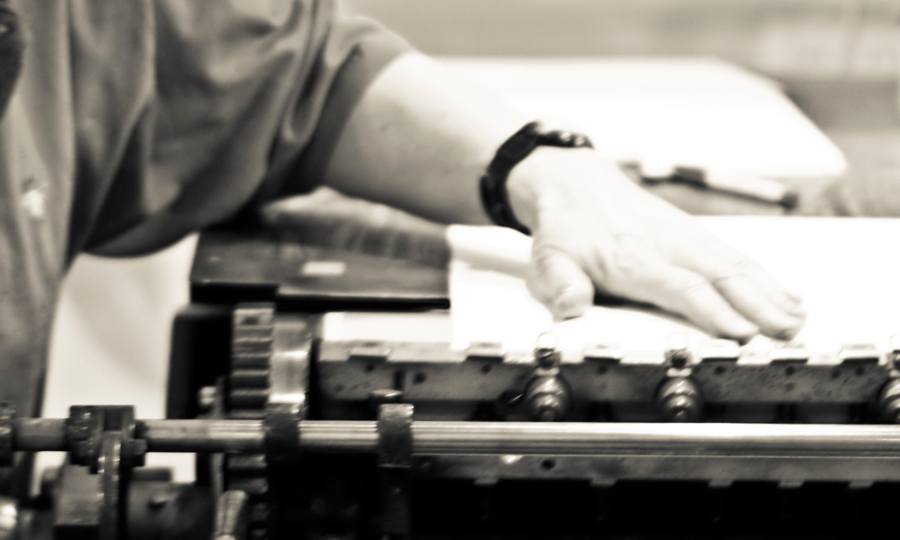
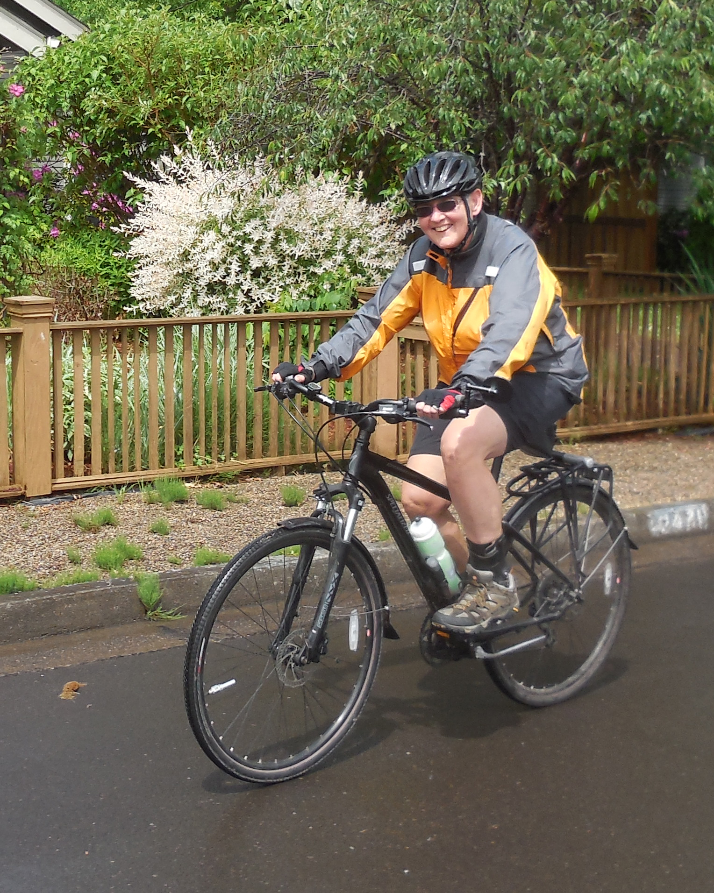

About the Press

Since 1989, lone goose press has been publishing limited letterpress works, printed broadsides and hand bound books. With this slow, exacting work, owner Sandy Tilcock continues to honor the highest standards in traditional book arts.
Why engage in letterpress printing at a time when technology allows instantaneous multimedia communication on a mass scale?

Today’s revolutionary innovation is tomorrow’s ordinary convenience that we soon take for granted. While we use and appreciate the wonders of digital media and internet communication, we want to invoke a quieter, more contemplative approach to the sharing of ideas and passions.
The mission of lone goose press is to promote book arts, to celebrate outstanding writing, and to foster conversation about community, social justice and environmental ethics.
Sandy Tilcock, Owner

Since her childhood, Sandy has been enchanted and inspired by the physical presence of books. She loved to read, but was also drawn to the weight and feel of books, their symmetry and order. It is this enchantment that led her to establish lone goose press. Over the past quarter century, her work has been recognized for its imaginative designs and impeccable craftsmanship. She holds a Master of Fine Arts degree from the University of Alabama, where she studied printing, typography and letterpress printing with noted printer and teacher Richard-Gabriel Rummonds. She was Founding Director of Knight Library Press at the University of Oregon, and served in that position for seven years.
Sandy has always had a passion for freedom. On long summer evenings as a child she treasured the ability to get on her bicycle and ride to the outskirts of town, exploring the edges of her world, delighting in the play of possibilities, returning at nightfall full of dreams. To this day she most loves the inviting warmth and expansiveness of that time of year. To her friends who prefer the cooler months she makes no apology for her midsummer affinity: “What can I say? I’m a tomato!”

The play of possibilities led Sandy to explore several pathways. As a mathematics major in college, she developed a disciplined, analytical approach to problems as well as an appreciation for what mathematicians call “the elegant solution”. A love of nature led her to photography back in the days when this craft inevitably meant contriving a darkroom and becoming intimate with chemical trays and timers. She was captivated by the sense of revelation in the play of light on surfaces. Over the years she became a passionate gardener. In that domain she tends to shun regimentation—she is the gentle advocate of chaos, delighting in the wild and unexpected. She has recently discovered the art of Bonsai, and enjoys the patient dialogue between plant and person, the gradual teasing out of the elegant solution.

Beyond her backyard, Sandy has long been an environmental advocate, devoted to preserving and protecting wild lands and waters. lone goose press derives its name from a passage in Aldo Leopold’s Sand County Almanac. Leopold’s curious observation of the occasional solitary Canada Goose during the spring migration resonated with her sense of sudden isolation starting a one- person enterprise after leaving the collegial support of the graduate program at Alabama. Sandy is devoted to her dogs, current census 3. They would describe her as loving, generous and attentive, though they would probably agree that she works too hard.

Sandy remains an avid bicyclist to this day.
In her work as in her life, Sandy values not just the elegant solution, but peace, harmony and understanding. She still seeks to venture to the outskirts in visual and verbal expression, nurturing an endless supply of dreams.
Assistants
Joining Sandy in the studio are Patrick, Sadie, Rosie and Samantha.

Patrick, Sandy’s partner for more than 40 years, has been actively engaged in the work of lone goose press since its beginning. Besides providing support services such as great meals, insistence on taking time for fun and helping maintain the studio he also works as the press’s editor and copy writer.
While it is rare for members of the canine contingent to take an active role in production at the press, they provide an important service in reminding the human staff to rest and play from time to time.

Sadie has witnessed a number of lone goose publications in her eleven years with the press. Both staff and visitors have come to appreciate her enthusiastic and cordial manner, and her willingness to offer her opinions on a variety of topics, especially those touching on treats or exercise.

Samantha, the newest member of the lone goose team, is working at completing her apprenticeship and mastering the difference between tools and toys.

Rosie, the elegant member of the contingent, often finds herself in some interesting positions and locations as she finds a spot to view the activities. These reflect her true personality which is comedienne in training